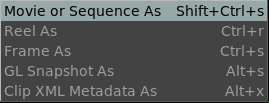

The File Save Menu

The File Save menu allows you to save a movie file or a sequence of images.
The Reel As option allows saving the Reel as a simple EDL.
The Frame as allows you to save a single image.
The GL Snapshot As allows you to save an opengl snapshot of your opengl view. This saves the annotations, for example, but it may not respect the image's original size, but the size of the viewport.
And it allows to save the ACES CTL transforms applied for LUT management as an ACES Clip XML Metadata file..